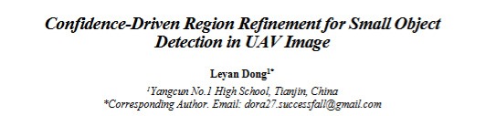

Research
AI-Based UAV Patrol Route Optimization
2025 – PresentThis project investigates the application of artificial intelligence techniques to optimize UAV patrol routes.
The objective is to improve operational efficiency by generating intelligent route plans while reducing unnecessary travel distance and resource consumption.
The project combines optimization algorithms, engineering analysis, and intelligent decision-making strategies to evaluate system performance under different operational scenarios.
Research Areas:
- Artificial Intelligence
- Optimization
- Autonomous Systems
- Engineering Applications
Computer Vision for Intelligent Systems
This research explores the use of computer vision techniques for intelligent perception and decision support.
Topics include object detection, image analysis, and machine learning methods that enable autonomous systems to better understand and interact with their environments.
Research Areas:
- Computer Vision
- Deep Learning
- Intelligent Perception
- Autonomous Systems
Conference Publication

Title:
Confidence-Driven Region Refinement for Small Object Detection in UAV image
Conference:
The 8th International Conference on
Computing and Data Science (CONF-CDS 2026)
Role:
Independent First Author
Abstract:
This research proposes an artificial intelligence-based
approach to address engineering challenges through data-driven analysis and optimization
techniques.
Keywords:
Artificial Intelligence / Data Science /
Computer Vision / Engineering Applications